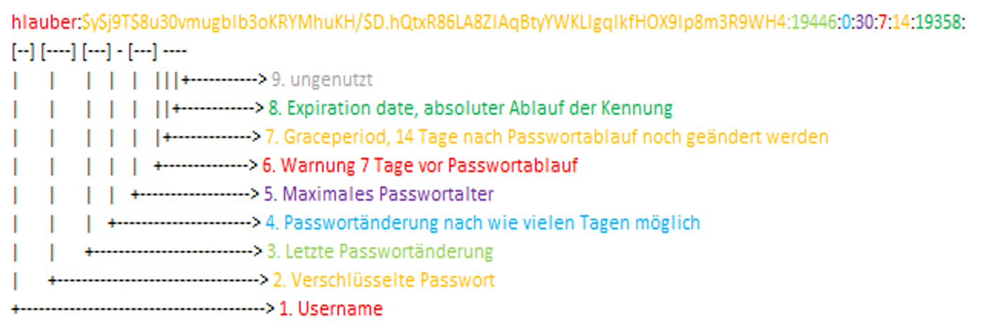

User Verwaltung¶
Benutzer anlegen¶
Um einen Benutzer anzulegen, verwendet man useradd. Dann kann man folgende Parameter übergeben:
Parameter |
Beschreibung |
Beispiel |
|---|---|---|
|
Kommentar |
|
|
Erstelle ein spezielles Home-Verzeichnis |
|
|
Ablaufdatum |
|
|
Primäre Gruppe festlegen |
|
|
Zusätzliche Gruppen festlegen |
|
|
Erstellt das Homeverzeichniss |
|
|
Hilfe-Menü |
|
|
Standard Bash setzen |
|
|
Inhalt von |
|
|
User nicht zu den Logs hinzufügen |
|
|
Passwort in Verschlüsselung |
|
Passwort setzen/ändern¶
Um das Passwort zu ändern, verwendet man passwd:
passwd benutzername
User löschen / sperren¶
Dies kann mit userdel erledigt werden.
Parameter |
Beschreibung |
Beispiel |
|---|---|---|
|
Erzwingt das Löschen des Benutzers, auch wenn der Benutzer angemeldet ist |
|
|
Hilfe-Menü |
|
|
Löscht den Benutzer und sein Home-Verzeichnis |
|
Gruppenverwaltung¶
Gruppe erstellen¶
Um eine neue Gruppe zu erstellen, verwende den Befehl groupadd:
sudo groupadd meine_gruppe
Benutezr zu einer Grupe hinzufügen¶
Um einen Benutzer zu einer Gruppe hinzuzufügen, verwendet man usermod:
sudo usermod -aG meine_gruppe benutzername
Gruppenmitglied entfernen¶
sudo deluser john developers
Gruppenmitgliedschaft überprüfen¶
Um die Mitglieder einer Gruppe zu überprüfen, verwende getent:
getent group meine_gruppe
Gruppe löschen¶
Um eine Gruppe zu löschen, verwende groupdel:
sudo groupdel meine_gruppe
Gruppe einer Datei ändern¶
Um die Gruppe einer Datei zu ändern, verwende chown:
sudo chown :meine_gruppe dateiname
Berechtigungen für die Gruppe festelgen¶
Um Berechtigungen für die Gruppe auf eine Datei anzuwenden, verwende chmod:
sudo chmod g+rwx dateiname
Hinweis¶
Stelle sicher, dass du administrative Berechtigungen (z.B. sudo) hast, um Gruppen zu erstellen, zu verwalten und Dateien zu ändern.
usermod Verwalten¶
Parameter |
Beschreibung |
Beispiel |
|---|---|---|
-L |
Sperrt den Benutzer |
|
-U |
Entsperrt den Benutzer |
|
-d |
Löscht das Passwort |
|
-e |
Ablaufdatum des Benutzers erzwingen |
|
-S |
Fragt den Status ab |
|
-g |
Gruppe hinzufügen und alle anderen entfernen |
|
-aG |
Gruppe hinzufügen, ohne sie zu entfernen |
|
Statusoptionen¶
Abkürzung |
Beschreibung |
|---|---|
Np |
Kein Passwort |
P |
Passwort |
L |
Gesperrt |
Wichtige Verzeichnisse¶
/etc/passwd: Informationen zum Benutzerkonto
/etc/shadow: Sichere Benutzerkontoinformationen
/etc/group: Informationen zur Gruppe
/etc/default/useradd: Standardinformationen
/etc/skel: Verzeichnis mit Standardinformationen

Verschlüsseltes Passwort bekommen¶
Mit mkpasswd kann man einen verschlüsselten String bekommen.
Sudo hinzufügen¶
Um einem Benutzer Sudo-Rechte zu geben, verwende folgendes:
usermod -aG sudo benutzername
Sudo steht für „Superuser Do“ und ist ein Befehlszeilenprogramm in Unix-ähnlichen Betriebssystemen, einschließlich Linux und macOS. Es ermöglicht autorisierten Benutzern, Befehle mit den Berechtigungen des Superusers oder eines anderen Benutzers auszuführen, wie es in der Konfigurationsdatei sudoers spezifiziert ist.
Login in andere User¶
Um sich in einen anderen Benutezr einzuloggen, verwende su:
su benutzer
oder
su -
Um sich wieder als root anzumelden, kann root sich einloggen, ohne das Passwort einzugeben.